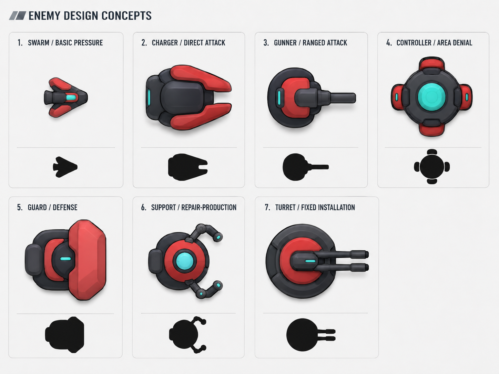
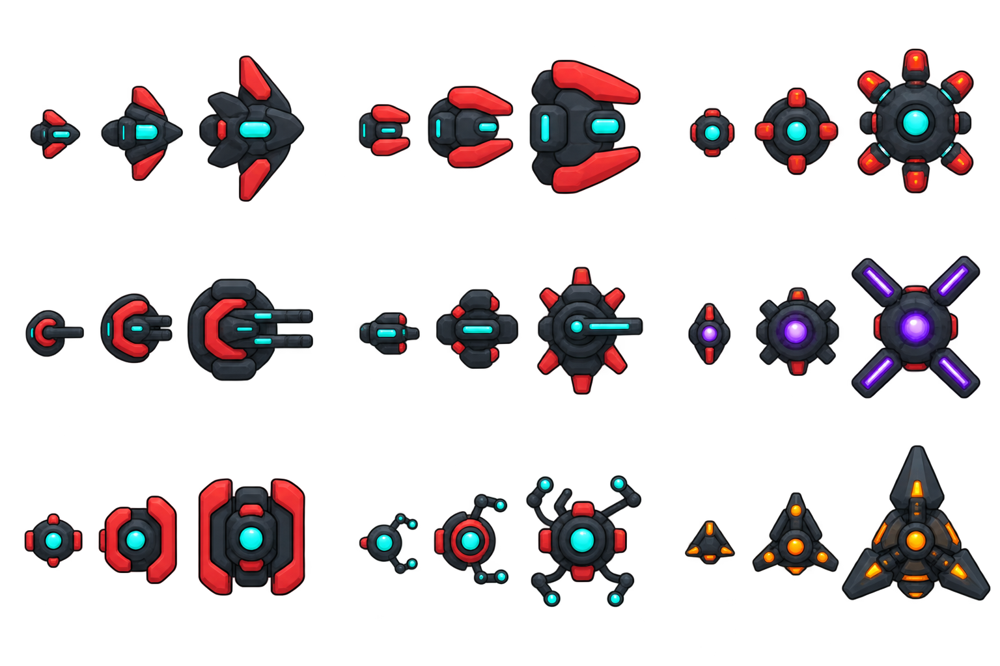
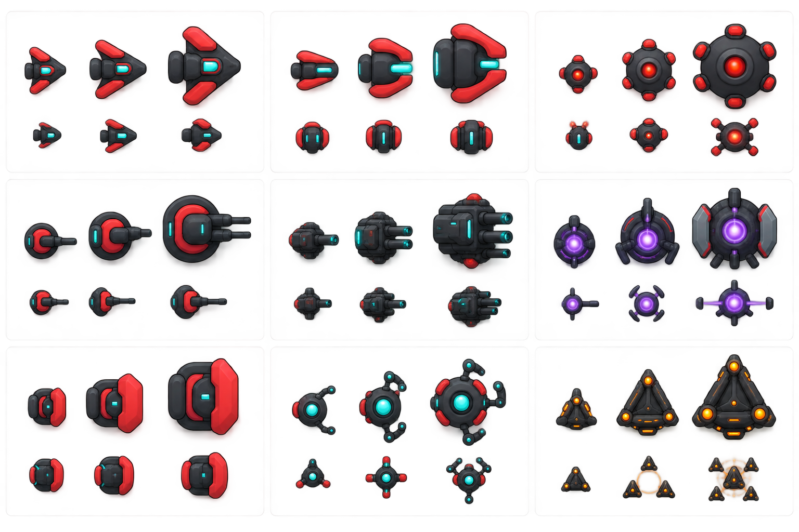

맵은 성장 경쟁판
보석을 줍기만 하는 수집전이 아니다. 플레이어와 적이 같은 세 목표를 서로 다른 방식으로 선점한다. 이동하지 않으면 적이 실제로 강해진다.
Integrated design report · 2026-08-20
Cardborne의 큰 단일 필드를 단순한 전투 배경이 아니라 플레이어와 적이 성장 기회를 두고 경쟁하는 장소로 바꾼다. 동시에 일반 적은 9개 기능 패밀리, T1–T3, 패밀리별 5개 트레잇으로 정리해 행동·크기·실루엣이 한눈에 이어지게 한다.
Design decision
보석을 줍기만 하는 수집전이 아니다. 플레이어와 적이 같은 세 목표를 서로 다른 방식으로 선점한다. 이동하지 않으면 적이 실제로 강해진다.
추격·돌진·자폭·사격·포격·제어·방어·유지·지휘의 9개 대응 행동을 유지한다. 고정형은 열 번째 패밀리가 아니라 배치 방식이다.
티어는 자연 성장, 트레잇은 행동 변형, 각성은 적이 맵 경쟁에서 이겼을 때만 생기는 임시 보상이다. 셋을 섞지 않는다.
As-is audit
| 현재 계약 | 의미 | 통합안에서의 처리 |
|---|---|---|
| 7200×4320 단일 필드, 중앙 스폰, 탐사형 20×12 미니맵 | 한 화면보다 큰 공간과 고정 지형은 이미 존재한다. | 새 맵을 만들지 않고, 멀리 떨어진 성장 신호가 기존 필드를 가로지르게 한다. |
ORDINARY_COMBAT → BOSS_WARNING → BOSS_COMBAT → CLEANUP → TRANSITION | 12개 보스 사이클의 전투 리듬이 제품 핵심이다. | 성장 경쟁은 일반 전투 안에서만 진행하고, 보스 경고 때 닫는다. 별도 방·모달·기지 페이즈를 만들지 않는다. |
| Transit Gate, 중립시설, 직접 배치 XP·리콜 픽업 | 월드 상호작용은 있지만 서로 하나의 장기 목표로 연결되지 않는다. | 전이문은 경로 단축, 시설은 경쟁 지점, 코어는 성장 보상으로 역할을 분담한다. |
| 시설은 파괴 후 반경 안에서 12초간 대칭 효과 | 발견해도 효과가 짧고, 당장 근처에 전투가 없으면 우회할 이유가 약하다. | 시설 선점 결과를 성장 경쟁 점수와 연결하되, 기존 12초 효과는 그대로 남긴다. |
| 일반 적 26 정의, production PNG 22개, 캠페인 순환 역할 14개, 엘리트 트레잇 3개 | 행동 콘텐츠는 많지만 플레이어가 기억할 시각 문법이 분산돼 있다. | 런타임 ID를 지우지 않고 9패밀리·3티어·1트레잇 표기로 분류한다. |
| 이동형 일반 적 가시 반지름 48, 고정형 62, 보스 146 | 일반 적 사이의 역할·티어 체급 차이가 약하다. 작은 세부가 실제 크기에서 사라진다. | 모든 T1을 48 이상으로 키우고, T2·T3가 약 8–12px씩 커지는 후보 계약을 검증한다. |
Concatenated source model
| 주제 | (1) 초기 보고서 | 확장 보고서 | 통합 결과 |
|---|---|---|---|
| 기본 분류 | 8패밀리 · 4티어 · 32트레잇 | 9패밀리 · 3티어 · 패밀리별 5트레잇 | 9패밀리 · T1–T3 · 45트레잇을 본체로 사용한다. |
| 초기안의 T4 | 가장 높은 자연 티어 | T3에서 자연 성장이 끝남 | T4를 버리지 않고 맵 경쟁 승리로 얻는 임시 각성으로 바꾼다. 평상시 스폰 티어에는 넣지 않는다. |
| 팩 | 같은 패밀리·티어·공유 트레잇, 셔플백 추첨 | 3–8기 소집단, 혼성은 지휘형 + 최대 2개 하위군 | 단일 팩 3–6기, 혼성 팩은 지휘형 1기 + 최대 2개 하위군. 셔플백으로 최근 트레잇 반복을 낮춘다. |
| 실루엣 비율 | 패밀리 70% · 티어 20% · 트레잇 10% | 패밀리 코어 70–80%, 한 적에 트레잇 하나 | 패밀리 몸체를 70–80% 유지한다. 티어는 몸체 크기·부품 수, 트레잇은 큰 부품 하나와 발동 효과만 더한다. |
| 고정형 | 별도 포탑 패밀리 | 기능 패밀리와 분리된 배치 축 | 고정은 배치 방식이다. Emitter·Artillery·Controller·Sustainer가 고정 배치될 수 있다. |
| 지휘형 | 단독 금지, 드물게 이중 트레잇 | 사망 시 팩 전술만 해제 | 단독 금지와 전술 해제를 모두 유지한다. 이중 트레잇은 랜덤이 아니라 적의 성장 경쟁 승리 보상으로만 허용한다. |
Provided visual evidence
세 이미지는 사용자가 제공한 외부 콘셉트다. 보고서 설명과 CSS 크롭에만 사용하며, Cardborne의 production 승인이나 시각 정본을 뜻하지 않는다. 실제 제작 시에는 VISUAL_SYSTEM.md와 정본 스타일 시트를 다시 따라야 한다.



Core loop
한 런에 한 번, 일반 전투 중 서로 먼 세 섹터에 성장 신호가 열린다. 플레이어와 적은 각 신호를 먼저 확보할 수 있다. 먼저 두 점을 얻는 쪽이 성장 경쟁에서 승리한다.
Signal A · 회수
플레이어: 접촉 후 1.5초 회수하면 1점.
적: 지정된 수확 팩이 2.5초 채널링하면 1점. 채널 중에는 코어와 적을 굵은 연결선으로 표시한다.
적 드롭과 섞지 않는 맵 고정 자원이다. 어느 쪽이 먹어도 소리·미니맵·HUD로 즉시 결과를 알린다.
Signal B · 시설
플레이어: 시설을 파괴해 기존 12초 효과를 켜면 1점.
적: 수호 팩이 시설 반경 안에 5기 이상 모여 6초 유지하면 시설을 과부하하고 1점.
기존 시설의 전술 효과는 유지한다. 적은 시설을 공격해 우연히 점수를 얻지 않고, 명시적인 집결 행동으로만 선점한다.
Signal C · 이동
플레이어: 지정 Transit Gate를 통과하고 반대편 릴레이를 2초 가동하면 1점.
적: 집결 팩이 릴레이에 5기 이상 도달해 6초 유지하면 1점.
기존 전이문을 단순 지름길이 아니라 경로 경쟁 도구로 사용한다. 정확한 위치는 해당 섹터를 탐사한 뒤 드러난다.
정확한 좌표를 처음부터 주면 탐사가 최단 경로 체크리스트가 된다.
세 지점이 동시에 점멸하지 않는다. 가장 임박한 적 행동 한 곳만 강하게 경고한다.
화면 밖에서 즉시 먹지 못한다. 최소 2.5–6초의 차단 가능한 창을 보장한다.
쿼터 완료는 막지 않는다. 미해결 신호는 비활성화하고 보스 흐름으로 복귀한다.
전체 적이 목표로 몰리지 않는다. 한 수확·수호·집결 팩만 현재 지점에 배정한다.
새 장식이 이동이나 발사체 판정의 진실을 바꾸지 않는다.
Enemy grammar
Family
추격·회피·측면 이동·우선 처치 등 플레이어의 대응 행동을 정한다.
Tier
같은 행동의 자연 성장이다. 크기·체력·기능 부품이 증가한다.
Trait
한 적에 하나. 큰 부품 하나와 발동 효과 하나로 읽힌다.
Deployment
모바일/고정 축이다. 공격 기능과 배치 상태를 별도 패밀리로 중복하지 않는다.
| 티어 | 형태 계약 | 게임플레이 계약 | 금지 |
|---|---|---|---|
| T1 · 학습 | 지배적 몸체 1 + 기능 부품 1, 큰 면 3개 안팎 | 패밀리의 가장 순수한 행동. 보정 없는 기준 체력·피해. | 작은 센서·램프·패널선으로 역할 설명 |
| T2 · 압박 | T1보다 8–10px 큰 몸체, 보조 기능 부품 1, 큰 면 4개 안팎 | 후딜 또는 범위가 개선된 같은 행동. 후보 체력 ×1.45, 피해 ×1.15. | 새 패밀리처럼 행동을 갈아끼우기 |
| T3 · 우선 표적 | T1보다 16–22px 큰 몸체, 기능 부품 최대 2개, 큰 면 5개 안팎 | 행동의 완성형. 후보 체력 ×2.05, 피해 ×1.30. 미니맵 우선 표적 가능. | 보스급 광원·동심원·잔부품 밀도 |
| 각성 · 경쟁 결과 | 티어 몸체는 그대로, 두 번째 큰 모듈 또는 발동 상태만 추가 | 적의 2/3 승리 때만 임시 부여. T3에 한해 두 트레잇을 조합. | 평상시 랜덤 등장, 영구 T4 스폰, 작은 배지 추가 |
| 패밀리 | T1 | T2 | T3 | 체급 이유 |
|---|---|---|---|---|
| 추격형 | 50 | 58 | 66 | 다수 압박이므로 가장 작지만 현행 48보다 크게 시작 |
| 돌진형 | 54 | 62 | 70 | 충돌 방향과 충각 길이가 보여야 함 |
| 자폭형 | 52 | 60 | 68 | 위험 코어와 외곽 폭발부를 구분 |
| 사격형 | 52 | 60 | 68 | 총열이 탄환이 아니라 차체에 붙은 기능으로 보여야 함 |
| 포격형 | 56 | 64 | 72 | 후방 우선 표적이므로 사격형보다 무거움 |
| 제어형 | 56 | 64 | 72 | 반경·통로 제어 장치가 큰 면으로 읽혀야 함 |
| 방어형 | 58 | 68 | 78 | 차단 역할과 방패 면적을 가장 크게 강조 |
| 유지형 | 56 | 66 | 76 | 수리 팔·축전기를 명확히 보이는 우선 표적 |
| 지휘형 | 56 | 66 | 76 | 팩 중앙의 전략 표적으로 읽혀야 함 |
| 고정 배치 | 66 | 74 | 82 | 현행 62보다 커지고, 패밀리 기능 모듈을 상부에 얹음 |
현재 승인 계약은 여전히 48 / 62 / 146이다. 위 수치를 구현하려면 시각 시스템 계약을 먼저 갱신하고, 16:9 실제 크기에서 혼잡도·투사체 피격·접촉 판정의 정직성을 검증해야 한다. 첫 시도에서는 충돌 반지름을 자동으로 키우지 않는다.
Nine family specifications
각 이미지 칸은 제공한 3×3 원본의 해당 구역을 CSS로 보여준다. 위쪽은 T1–T3, 아래쪽은 트레잇 효과 예시다. 시각 효과는 작은 아이콘 대신 큰 형태 변화와 짧은 발동 상태로 정의한다.
가장 단순한 근접 압박. 수가 많아도 개별 기능은 하나뿐이다. 현재 ordinary_melee_01 계열의 기본 반응을 묶는다.
전면 피해를 줄여 측면 사격을 요구한다.
두꺼운 전면판 1개처치 시 더 작은 T1 둘로 갈라진다.
중앙 갈라짐 + 두 큰 엽체력이 낮을수록 추격 속도가 오른다.
후방 열면이 크게 확장접촉 피해 일부로 체력을 회복한다.
오목한 전면 턱 + 회수 펄스넉백에 강하고 느리지만 접촉 압력이 높다.
낮고 넓은 후방 질량방향을 잠그고 직선으로 돌진한다. 전면 충각과 후방 추진기가 진행 방향을 설명한다. 현재 edge, pull, overload 행동의 가족이다.
더 오래 예고한 뒤 더 빠르게 돌진하고 충돌 후 취약해진다.
노출 코어의 굵은 열 테두리첫 돌진 뒤 짧게 재조준해 한 번 더 돌진한다.
쌍둥이 후방 엔진 블록벽 충돌 후 한 번 반사해 새 경로를 만든다.
한쪽 큰 범퍼예고선 안의 플레이어를 약하게 끌어당긴 뒤 돌진한다.
U자형 전면 갈고리돌진 종료 지점에 짧은 원형 밀치기를 만든다.
넓은 충각 + 충돌 시 코드 원판몸체 자체가 탄두다. 코어의 커짐과 외곽 장갑의 벌어짐이 폭발 임박을 설명한다. 현재 지역 압박과 sweep 계열을 흡수한다.
폭발 후 작은 보조 폭발 3개를 남긴다.
외곽의 큰 탄두 포드 3개근처 자폭형을 순서대로 기폭한다.
한쪽 굵은 연결 레일폭발 직전 짧게 안쪽으로 끌어당긴다.
오목한 흡입 절개이동 경로에 짧은 위험 흔적을 남긴다.
넓은 후방 배출면처치된 외피가 잠시 남아 지연 폭발한다.
분리되는 외곽 껍질중거리 직접 사격. 큰 총열 방향이 조준 방향과 일치해야 한다. 현재 ranged, lane, range, beam, resonance를 묶는다.
짧은 간격으로 3발을 묶어 쏜다.
큰 3슬릿 총구 블록넓은 부채꼴 탄으로 측면 공간을 줄인다.
부채형 총구 덮개한 발이 플레이어 뒤까지 이어지는 긴 위험선을 만든다.
단일 장포신예고 중 조준 보정이 오래 지속된다.
큰 비대칭 센서 핀연속 사격으로 통로를 잠시 막는다.
총열 뒤 넓은 냉각 블록장거리 예측 포격. 직접 탄선이 아니라 착탄 지점을 먼저 읽는다. 현재 growth의 원거리 지역 압박을 확장한다.
주 착탄 뒤 작은 착탄 3개가 갈라진다.
넓게 분할된 포구 왕관느리지만 큰 착탄 반경과 강한 밀치기를 준다.
굵은 포신 + 후방 균형추착탄 지역이 짧은 지속 위험이 된다.
대형 하부 탄두 통착탄 예고가 한 번 제한적으로 보정된다.
큰 유도 핀 하나서로 다른 두 착탄점을 연속으로 예고한다.
굵은 평행 포신 2개피해보다 공간 배치가 핵심이다. 방출기 방향과 경고 면이 실제 충돌 영역을 정직하게 보여야 한다. 현재 gap과 compression을 묶는다.
서로 마주보는 두 면이 안전 폭을 줄인다.
대향하는 큰 판 2개다른 제어형과 선을 만들어 통로를 나눈다.
좌우 연결 기둥밟으면 짧게 둔화되는 한 영역을 놓는다.
넓은 하부 방출판한 방향 경고선이 회전하며 공간을 쓸어낸다.
긴 방사형 팔 하나서로 마주보는 두 방출구 사이만 위험해진다.
갈라진 전면 턱 2개자기 방어 또는 아군 차단을 담당한다. 방패 면은 발사체가 막히는 실제 방향과 같아야 한다. 현재 shield와 reflect를 묶는다.
인접 아군까지 덮는 넓은 정면 차단을 만든다.
감싸는 한 장의 큰 방패정면 직사 탄을 제한적으로 되돌린다.
평평한 중앙 반사면전개 중 이동하지 않지만 넉백과 제어에 강하다.
굵은 지면 지지대 2개막은 피해가 임계치에 닿으면 짧은 반격탄을 쏜다.
방패 중앙의 큰 개폐선근처의 제한된 플레이어 발사체를 요격한다.
상부 방어 포탑 하나회복·정화·보호 충전을 제공하는 전략 표적. 공격력보다 생존 시간을 바꾼다. 현재 support_01과 고정 지원 행동을 묶는다.
한 대상에게 지속 회복을 보낸다.
큰 수리 팔 하나주기적으로 주변 여러 적을 소량 회복한다.
넓은 십자 방출기주변 적의 둔화·중독 같은 상태를 제거한다.
갈라진 서비스 안테나방어형의 방패 재사용을 앞당긴다.
큰 후방 축전기사망 시 주변 적에게 한 번의 회복을 남긴다.
중앙 파손선 + 경고 코어혼성 팩의 이동과 성장 목표 수행을 조율한다. 혼자 스폰하지 않는다. 현재 support_03 운반·지휘 행동을 프로토타입 기준으로 삼을 수 있다.
팩이 짧은 예고 후 함께 재배치한다.
쌍둥이 측면 관문 핀두 하위군의 간격을 유지해 협공한다.
서로 마주보는 연결 노드 2개주변 적을 성장 목표로 빠르게 모은다.
전방 지휘 쐐기멀리 있는 팩 하나에 목표 명령을 전달한다.
큰 전방 센서판위험해진 하위군을 자신 쪽으로 후퇴시킨다.
열린 후방 포획 포크Composition and growth
같은 패밀리·티어·트레잇의 3–6기. 하나의 큰 행동을 학습시킨다. 팩 내부에서 트레잇을 섞지 않는다.
Coordinator 1기 + 최대 2개의 같은 성격 하위군. 지휘형 사망 시 집결·협공만 풀리고 생존자는 본래 행동을 계속한다.
Emitter·Artillery·Controller·Sustainer 중 하나를 설치물로 배치한다. 가족 행동은 유지하고 이동만 제거한다.
| 규칙 | 정의 | 이유 |
|---|---|---|
| 한 적 한 트레잇 | 평상시에는 패밀리 전용 트레잇 하나만 가진다. | 시각과 대응법을 1:1로 유지한다. |
| 셔플백 | 활성 풀의 트레잇을 가방처럼 한 번씩 뽑고 다시 채운다. 방금 많이 나온 트레잇은 다음 가중치를 낮춘다. | 같은 변형의 연속 출현을 줄이되 이전 학습을 폐기하지 않는다. |
| 티어 중첩 구간 | 초반 T1 중심 → 중반 T1/T2 → 후반 T2/T3. 경계를 겹친다. | 한 사이클에 실루엣이 갑자기 전부 교체되는 느낌을 막는다. |
| 점수별 국소 성장 | 적이 성장 신호 1점을 얻으면 그 점수를 낸 팩만 즉시 티어 +1, T3는 체력 일부 회복. | 한 점도 실제 결과가 있지만 전역 눈덩이는 만들지 않는다. |
| 2/3 적 승리 | 공개된 한 패밀리의 미래 스폰을 +1티어. T3 팩은 두 번째 트레잇을 얻어 각성. | 플레이어가 경쟁을 무시한 대가를 분명히 보이게 한다. |
| 각성 종료 | 프로토타입에서는 다음 보스 사망 시 해제한다. | 패배가 남은 런 전체를 망치는 것을 막고 학습 가능한 창을 만든다. |
| 지휘형 제한 | 단독 스폰 금지, 한 혼성 팩에 1기, 성장 목표 전담 팩에 우선 배정. | 팩 전술과 맵 경쟁의 의도를 한 표적으로 모은다. |
적 성장 1/2 한 줄로 알린다.Implementation-ready rollout
| 단계 | 범위 | 성공 기준 | 중단 기준 |
|---|---|---|---|
| 0 · 기준선 | 현재 런의 방문 섹터, 시설 발견·파괴 수, Transit Gate 사용 수, 첫 상호작용 시간, 보스 도달 시간을 기록 | 변경 전 이동 패턴을 재현 가능 | 측정이 런마다 비교 불가 |
| 1 · 무보상 2/3 | 코어·시설 집결·릴레이 신호와 P/E 점수만 구현. 보상은 임시 토큰 | 플레이어가 기존보다 다른 섹터를 방문하고 목표를 차단 | 항상 같은 두 목표만 고르거나 전투를 완전히 피함 |
| 2 · 적 성장 연결 | 기존 역할 1패밀리에만 티어 +1과 트레잇 1개 연결 | 패배 결과를 설명 없이 외형과 행동으로 식별 | 강화 원인을 모르거나 다음 보스 구간이 과도하게 어려워짐 |
| 3 · 플레이어 진화 | 보유 카드 중 소수의 적격 진화만 다음 보스 보상에 추가 | 모달 없이 탐사 동기와 빌드 선택이 연결 | 진화가 없으면 목표를 전혀 하지 않거나 필수 노동화 |
| 4 · 9패밀리 확장 | 패밀리별 T1–T3와 트레잇을 한 가족씩 실제 크기로 검증 | 1초 노출에서 가족·티어·발동 트레잇을 구분 | 작은 세부·상시 광원·화면 혼잡으로 구분해야 함 |
Future expansion only
여러 기지를 방어하기 위해 맵을 왕복하는 구조는 이동 동기를 강하게 만들지만, 현재의 “플레이어 생존 + 쿼터 보스”를 “기지 생존 + 웨이브 방어”로 바꿀 위험이 크다. 본편 통합안에는 넣지 않는다.
필드에 2–4개 기지가 있고 공격 예고에 맞춰 이동한다. 기지마다 수리·탄막·정찰 같은 기능을 맡는다.
공격 사이에 자원을 모으되, 다음 습격 전에 어느 기지로 돌아갈지 선택한다. Transit Gate가 방어망의 핵심이 된다.
별도 모드, 별도 런 목표, 기지 체력·공격 예고·패배 조건·웨이브 스케줄을 새로 설계해야 한다.
Sources and provenance
cardborne_enemy_family_trait_report_ko (1).html — SHA-256 80f4…a1a; 8패밀리·4티어·셔플백·팩 규칙.cardborne_enemy_family_trait_report_ko.html — SHA-256 b87f…ba6; 9패밀리·T1–T3·45트레잇·고정 배치 축.| 레퍼런스 | 가져오는 구조 | 가져오지 않는 것 |
|---|---|---|
| Vampire Survivors · 진화 | 빌드 조건과 월드 획득을 결합해 행동 변화를 연다. | 모든 카드의 대규모 진화 제작을 먼저 하지 않는다. |
| Hades · 보상 예고 | 우회 전에 보상 종류를 알리고 선택하게 한다. | 방 단위 분기와 전투 중단을 가져오지 않는다. |
| Risk of Rain 2 · 위험 선택 | 플레이어가 더 큰 보상을 위해 위험을 자발적으로 키운다. | 무료 상호작용이나 무제한 중첩을 가져오지 않는다. |
| Pacific Drive · 임계치와 탈출 | 자원 임계치가 다음 게임 상태를 연다. | 별도 탈출 페이즈를 만들지 않는다. |
| Dome Keeper · 탐사/귀환/방어 | 멀리 갈수록 귀환 비용이 생기는 이동 긴장. | 기지 방어는 추후 별도 확장안으로만 보존한다. |
| Deep Rock Galactic · 부목표 | 주 목표와 별개인 선택적 수집이 탐사 범위를 넓힌다. | 런 완료를 막는 필수 청소 목표를 만들지 않는다. |
| Against the Storm · 위험 예고 | 위험 종류는 먼저 알리고 상세 결과는 현장에서 드러낸다. | 복잡한 자원 해결식과 이벤트 콘텐츠 양을 가져오지 않는다. |
| Outer Wilds · 발견 단서 | 한 발견이 다음 목적지를 만든다. | 모든 장소에 전투력 보상을 붙이지 않는다. |
VISUAL_SYSTEM.md SHA-256 2e5c…006; 정본 스타일 시트 SHA-256 96cc…889 확인. 제공 PNG 해시: A 6fa4…edc, B 47dc…e18, C 7341…791. 세 PNG는 원본과 동일한 바이트로 복사했다.
{kind=link}